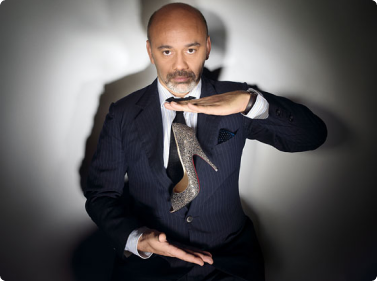
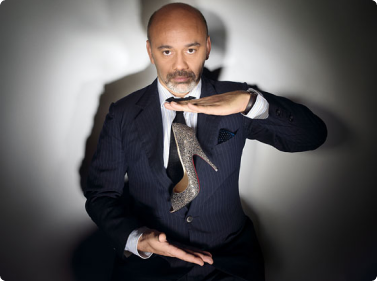

Christian Louboutin
DESIGNER
An artist of considerable range, Chet Faker — the name taken by Melbourne-raised, Brooklyn-based Nick Murphy — writes, performs and records all of his own music, giving it a warm, intimate feel with a solid groove structure.

 
